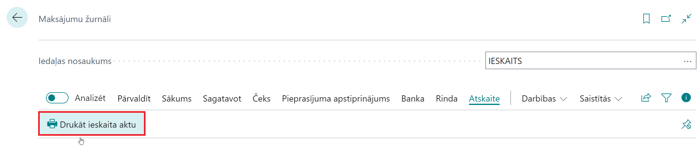
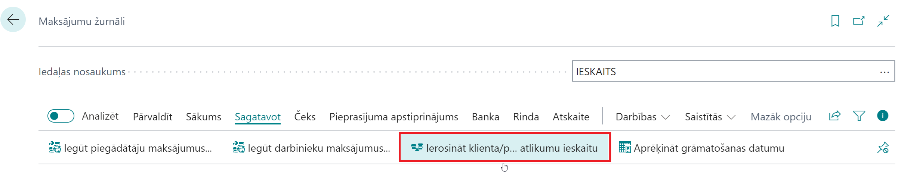
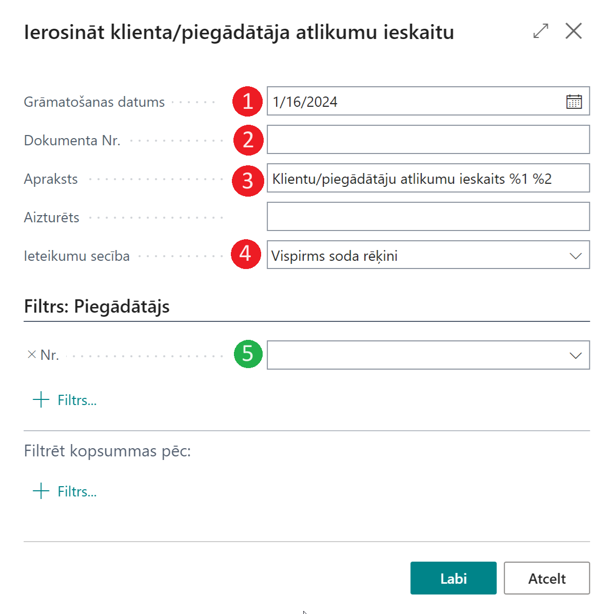
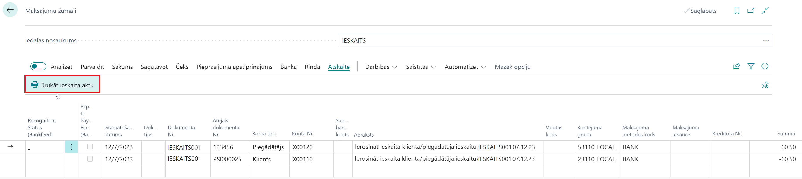
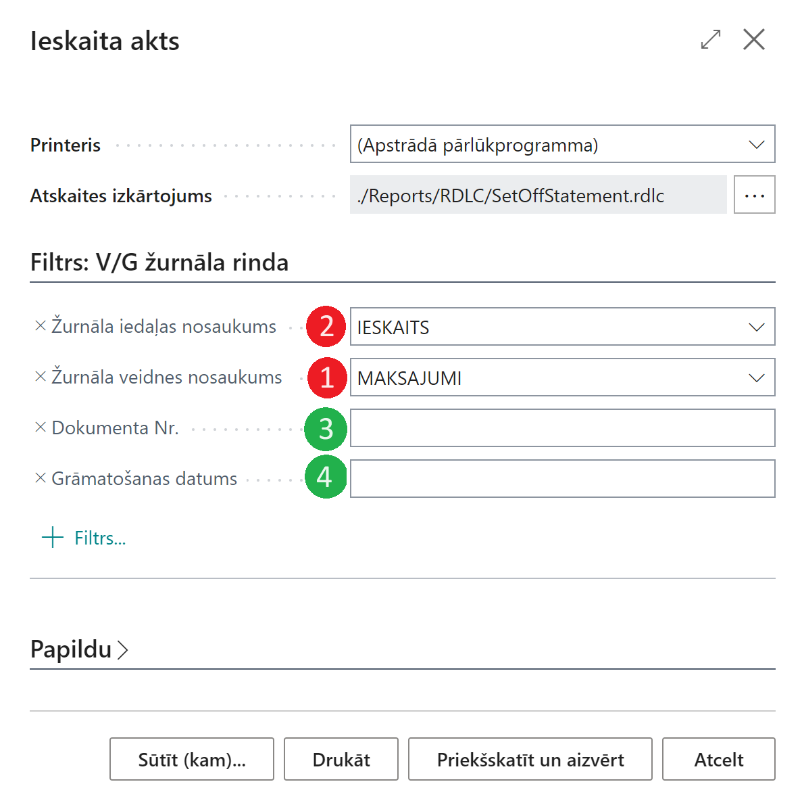

Ieksaita akta izdruka
Apskats
Sistēmas standarta funkcionalitāte nodrošina Ierosināt klienta/piegādātāja ieskaitu funkciju maksājumu žurnālā. Rezultātā tiek izveidotas 2 žurnāla rindas:
Piegādātāja neapmaksāto rēķinu summa
Klienta neapmaksāto rēķinu summa
Sistēmas standarta funkcija neietver nekādas darījuma izdrukas iespējas.
Pielāgojums pievieno Maksājumu žurnālos pogu Drukāt ieskaita aktu sekcijā Atskaite. Izdruka tiek izmantota pirms maksājumu žurnāla rindu grāmatošanas. Pēc pēc rindu grāmatošanas izdruka nav pieejama.
Šādu darījumu apstrādei ieteicams izmantot atsevišķu Maksājumu žurnāla iedaļu (Šai iedaļai ir jāatspējo kopēšanas PVN grāmatošanas iestatīšana, ja var sagatavot izdruku, kopējot iegrāmatotās žurnāla rindas).

Priekšnosacījumi
Pirms ieskaita darījuma izveidošanas nepieciešams nodrošināt:
Piegādātāja karte un Klienta karte ir saistītas, izmantojot kontaktpersonas (biznesa attiecības)
Gan Piegādātājam, gan Klientam ir neapmaksāti rēķini
Ieskaita datumam ir jābūt pēc jaunākā piegādātāja/klienta rēķina.

Maksājumu žurnālos izvēlēties atbilstošu iedaļu. Darbību joslā nospiediet Ierosināt klienta/piegādātāja ieskaitu

Jāaizpilda zemāk norādītā informācija
Grāmatošanas datums [1] - ieskaita darījuma datums
Dokumenta Nr. [2]- ievada manuāli, ja maksājumu žurnāla iedaļai nav piešķirta neviena num. sērija.
Apraksts [3]- sistēmas ģenerēts apraksts, kas satur šādus parametrus:
%1 - dokumenta numurs
%2 - dokumenta datums
Ieteikumu secība [4]
Finance Charge Memos First - Finance Charge Memos are suggested first for the sett-off, other document types are taken into consideration afterwards
Invoice First - Invoices are suggested first for the sett-off, other document types are taken into consideration afterwards
By Entry No. - documents are suggested by Entry No.
Vendor No. [5]- set-off can be suggested for definite Vendor; if this filter is blank, then Set-off is suggested for all Vendors and their linked Customers.

After the Payment Journal lines are created, prepare the printout

In report request page
Journal Template Name - filled automatically
Journal Batch Name - filled automatically
Document No. - use Document No. as filter, otherwise leave blank
Posting Date - use Posting Date as filter, otherwise leave blank

Set-off statement printout is prepared in accordance to Language Code that is set in Vendor Card.
Nosacījumi un ierobežojumi
Jābūt instalētai Latvijas Lokalizācijai Latvian Localization.